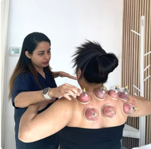

01
Static Cupping
Cups may be positioned on selected areas and maintained for a period determined by the treating professional.
A complementary physiotherapy approach that may be incorporated into an individualized rehabilitation programme following professional assessment.

Dry Cupping Therapy uses cups placed on the skin to create suction. It may be considered as one component of a broader physiotherapy and rehabilitation programme.
Your physiotherapist can assess your symptoms, medical history, treatment goals and overall presentation before deciding whether cupping is appropriate for your treatment plan.
Treatment is planned according to your individual clinical needs.
Treatment is provided according to an appropriate clinical plan.
It may be combined with suitable physiotherapy interventions.
Dry Cupping uses cups placed on the skin to create suction, without making an incision. The approach used, treatment areas and duration should be selected by a suitably trained healthcare professional according to the patient's assessment.
Cups may be positioned on selected areas and maintained for a period determined by the treating professional.
Cupping may be focused on specific areas based on your symptoms and individual treatment plan.
In selected cases, cupping may be incorporated with movement strategies under professional guidance.
The role of Dry Cupping Therapy depends on your individual assessment. Your physiotherapist will determine whether it is appropriate and how it may fit into your rehabilitation programme.
May be used as an adjunct to a rehabilitation programme focused on movement and function.
Treatment selection is based on your presentation, goals and clinical assessment.
May be combined with exercise, manual therapy and other physiotherapy interventions.
Treatment is provided by an appropriately trained healthcare professional following suitable assessment.
Your treatment journey begins with an assessment and is adapted according to your individual rehabilitation needs.
Discuss your symptoms, concerns and rehabilitation goals with your physiotherapist.
Your symptoms, movement and relevant health information are assessed before treatment is selected.
If considered appropriate, cups are applied to selected areas under professional supervision.
Your therapist may recommend exercises, movement strategies or other rehabilitation activities.
Dry Cupping Therapy may not be appropriate for every person or every condition. Suitability depends on your health status, skin condition, symptoms, medications and clinical assessment. Temporary circular marks or discolouration can also occur following cupping, and their duration can vary between individuals.
Please inform your physiotherapist about relevant health information, medications or concerns before treatment.
Here are some general questions about Dry Cupping Therapy. Your physiotherapist can provide information specific to your condition during consultation.
Ask Our Team →Dry Cupping involves placing cups on the skin and creating suction without making an incision. It may be used as an adjunct to an individualised physiotherapy plan.
Sensations can vary between individuals. You may experience a pulling or pressure sensation. Your therapist should adjust the treatment according to your response.
Yes. Temporary circular marks or discolouration can occur following cupping. The duration can vary between individuals.
No. Suitability depends on your health status, skin condition, symptoms, medications and clinical assessment. Your physiotherapist will advise you.
Speak with our physiotherapy team to understand whether Dry Cupping Therapy may be suitable for your individual rehabilitation needs.